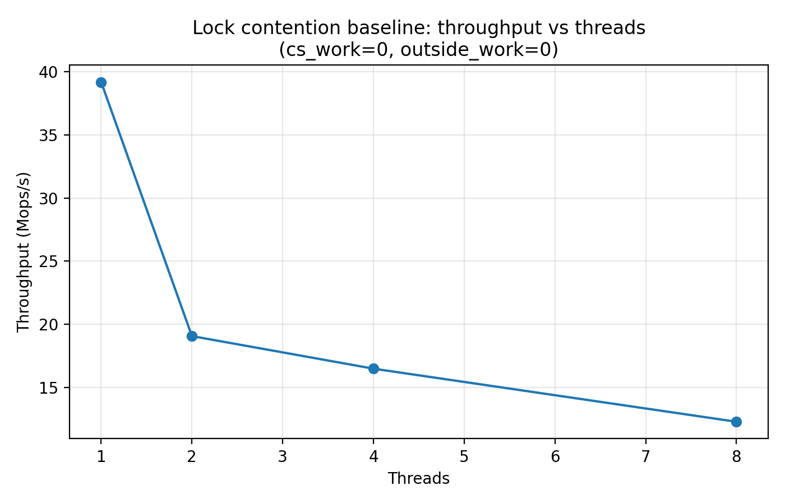
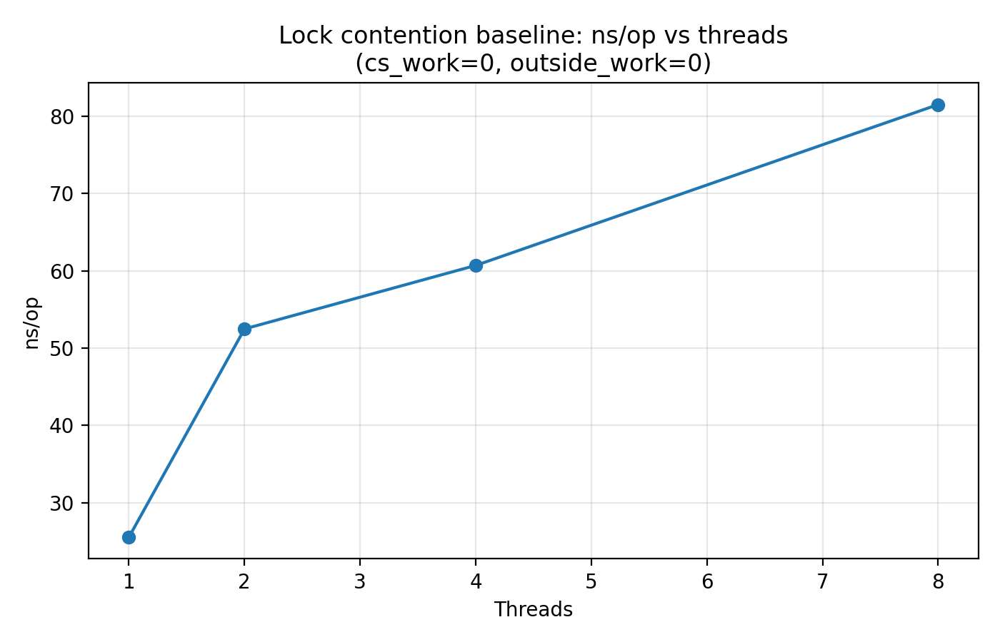
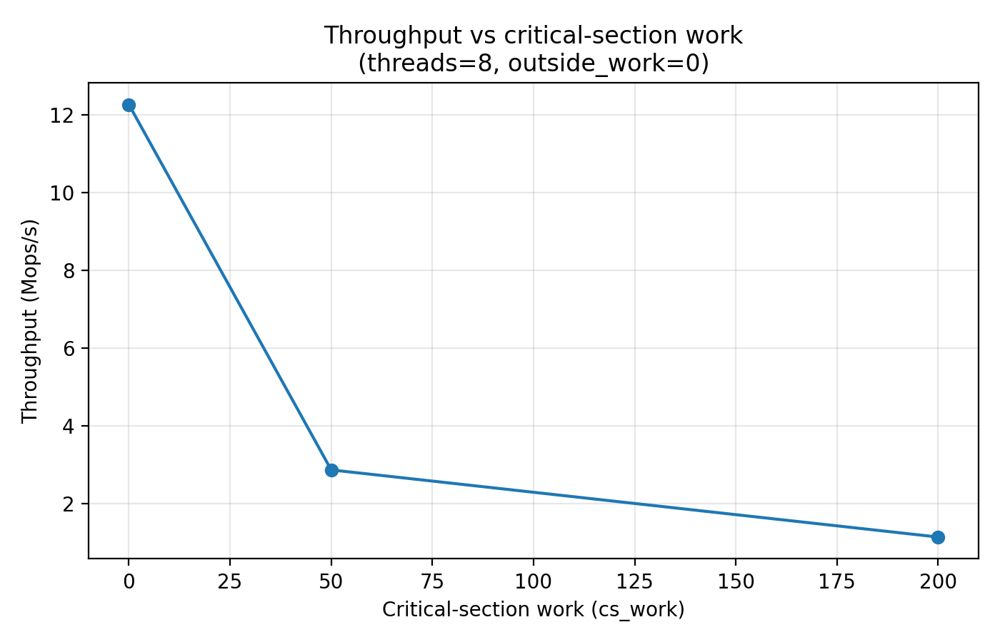
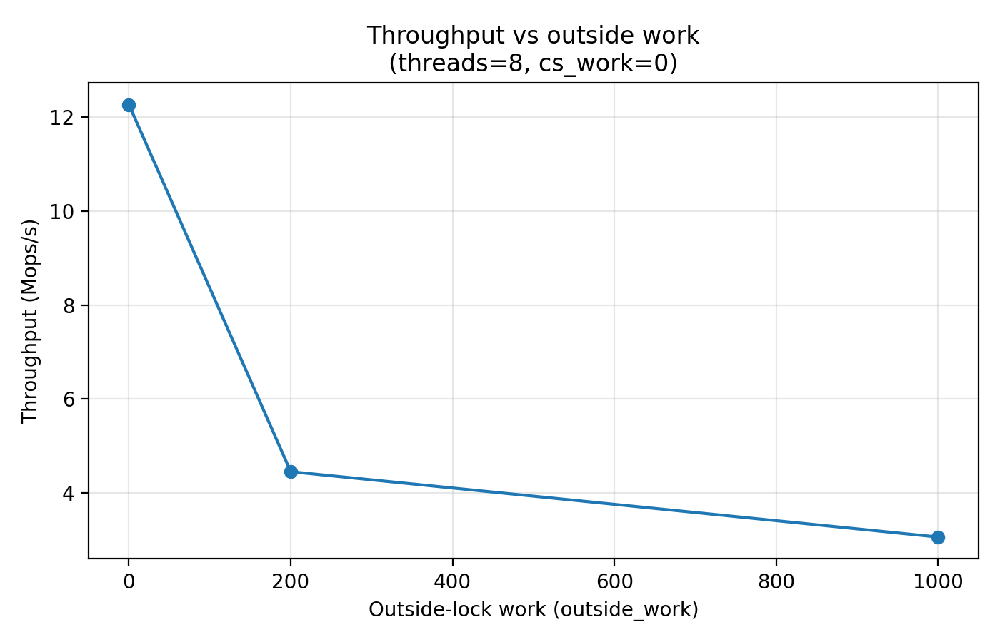
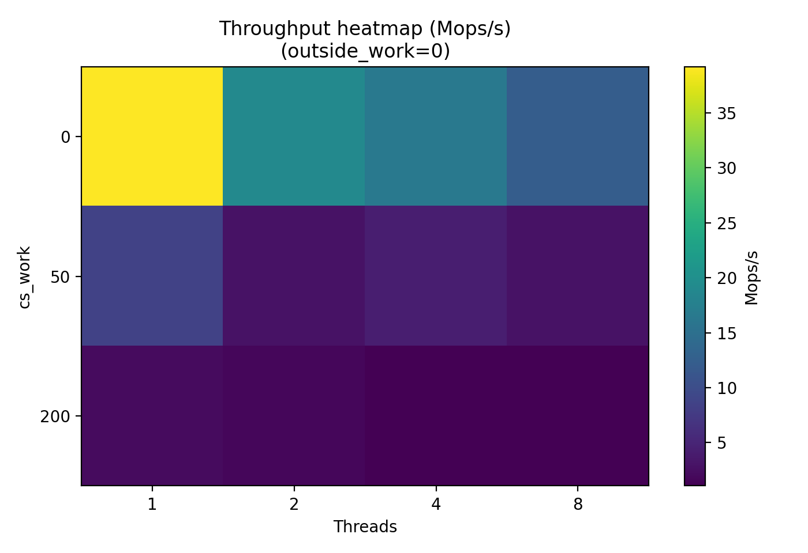

02-lock-contention: When More Threads Make Things Slower¶
Modern CPUs have many cores, so it is tempting to assume that simply adding more threads will increase performance.
However, this assumption quickly breaks down when threads compete for shared resources.
One of the most common bottlenecks in concurrent systems is lock contention.
This experiment investigates how a shared mutex behaves when multiple threads repeatedly acquire and release it.
The Problem: Shared Locks¶
Consider a simple shared counter protected by a mutex.
pthread_mutex_lock(&lock);
counter++;
pthread_mutex_unlock(&lock);
If multiple threads repeatedly execute this code, they must serialize access to the counter.
Even on a multi-core machine, only one thread can hold the lock at a time.
This creates a scalability bottleneck.
Experimental Design¶
Each worker thread repeatedly executes the following loop:
lock(mutex)
do cs_work
shared_counter++
unlock(mutex)
do outside_work
Parameters we vary:
| parameter | meaning |
|---|---|
threads |
number of worker threads |
cs_work |
work inside the critical section |
outside_work |
work outside the lock |
Each thread performs:
1,000,000 lock acquisitions
Metrics collected:
- elapsed time
- ns/op
- throughput (Mops/s)
Correctness Check¶
To verify synchronization correctness we ensure:
final_counter = threads × iterations
Example:
1000000 vs 1000000
2000000 vs 2000000
This confirms the mutex correctly protects the shared counter.
Baseline: Throughput vs Threads¶
Configuration:
cs_work = 0
outside_work = 0

Results:
| threads | throughput (Mops/s) |
|---|---|
| 1 | 39.188 |
| 2 | 19.055 |
| 4 | 16.475 |
| 8 | 12.267 |
Instead of increasing with thread count, throughput decreases.
Why?
Because the mutex becomes a serialization point.
more threads
→ more waiting
→ less throughput
Lock Latency Growth¶

| threads | ns/op |
|---|---|
| 1 | 25.52 |
| 2 | 52.48 |
| 4 | 60.70 |
| 8 | 81.52 |
Latency per operation increases because threads must wait longer to acquire the mutex.
Three main effects contribute:
- mutex wait queues
- cache-line bouncing
- scheduler interaction
Impact of Critical Section Length¶
When the critical section becomes longer, contention becomes dramatically worse.
Threads = 8

| cs_work | throughput |
|---|---|
| 0 | 12.267 |
| 50 | 2.870 |
| 200 | 1.143 |
Longer critical sections increase lock hold time, which increases waiting time for other threads.
longer lock hold
→ longer queues
→ throughput collapse
Impact of Outside Work¶
Threads = 8

Increasing work outside the lock changes how frequently threads attempt to acquire the mutex.
However, because the outside work itself consumes CPU cycles, total throughput still decreases.
Contention Overview¶
The following heatmap summarizes the interaction between:
- thread count
- critical section size

Two patterns are clearly visible:
- More threads → lower throughput
- Longer critical section → severe contention
Why This Matters¶
Many real systems suffer from the same issue.
Examples include:
- global counters
- shared queues
- centralized allocators
- global caches
To avoid contention bottlenecks, scalable systems often use:
- per-thread structures
- sharded locks
- lock-free data structures
- RCU-based synchronization
Key Takeaways¶
This experiment demonstrates three fundamental properties of lock-based concurrency.
1. Shared locks limit scalability¶
threads ↑ → throughput ↓
2. Critical section length amplifies contention¶
cs_work ↑ → throughput collapse
3. Work distribution affects lock pressure¶
outside_work ↑ → lock frequency ↓
Understanding these behaviors is essential when designing high-performance concurrent systems.
Next Experiment¶
Next we investigate thread pool scaling, where work distribution and scheduling overhead introduce new performance limits.